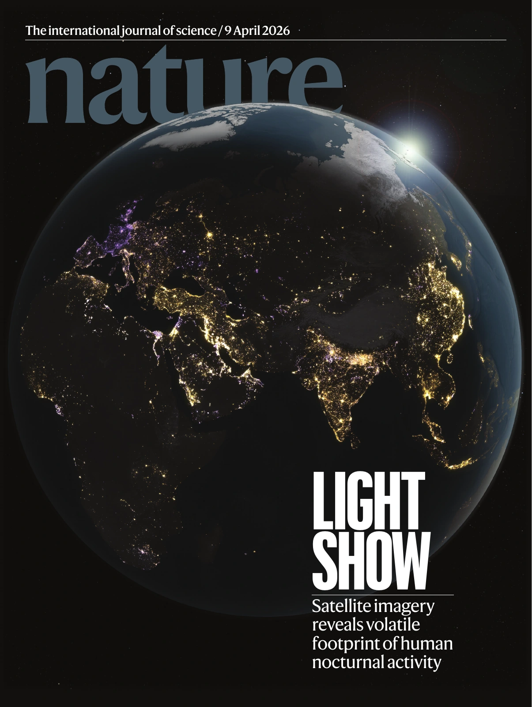

Nighttime lights & human activity
Continuous monitoring of abrupt and gradual changes in artificial light at night using NASA’s Black Marble product suite.
CORNELL UNIVERSITY · ITHACA, NY
Tian Li
I study how the changing lights of our planet reveal human activity and its connections to the environment.
Postdoctoral Associate
School of Integrative Plant Science · Soil and Crop Sciences
01 / RESEARCH
I use satellite observations and time series analysis to study artificial light at night, human activity, and environmental change. My interests span vegetation resilience, sustainable agriculture, and global change.
Continuous monitoring of abrupt and gradual changes in artificial light at night using NASA’s Black Marble product suite.
Investigating the environmental impact of artificial light at night on forest and urban tree resilience.
Developing Agricultural Black Marble to monitor and characterize nighttime agricultural activities across the Corn Belt.
OPEN SCIENCE
02 / PUBLICATIONS
Peer-reviewed work on nighttime lights, land change, and ecosystem dynamics.
7 publications
Remote Sensing of Environment. Accepted.
Nature Ecology & Evolution, 10, 1682–1693.
Proceedings of the National Academy of Sciences, 123(24), e2537770123.
Nature, 652(8109), 379–386. Cover-featured article.

Nature · 9 April 2026Nature Geoscience, 18(10), 989–996.
Remote Sensing of Environment, 282, 113269. Selected for NASA’s Black Marble VNP46A5 change product.
Remote Sensing of Environment, 278, 113073.
No publications match your search. Try another term or year.
Manuscripts in preparation or ready to submit, as listed in the CV.
03 / ACADEMIC PATH
Remote sensing research across Cornell, the University of Connecticut, and Boston University.
Principal investigator: Yun Yang
NASA Black Marble Nighttime Lights Product Suite from Suomi-NPP and NOAA-20 VIIRS | Principal investigators: Zhe Zhu and Zhuosen Wang
Developed a continuous nighttime light change detection algorithm and produced and analyzed a global nighttime light change product. Evaluated the environmental impact of artificial light at night on forest resilience near urban areas.
IARPA Space-based Machine Automated Recognition Technique | Principal investigator: Zhe Zhu
Integrated and analyzed nighttime light changes to characterize construction activities.
National estimates of inpatient disparities for Hispanics | Principal investigator: Amresh D. Hanchate
Developed a spatial analysis program to assess health care disparities using ambulance, patient, and demographic data.
Landscape-Scale Histories and Active Monitoring of Disturbance, Seasonality and Greenness Trends for ABoVE from Landsat | Principal investigator: Curtis E. Woodcock
Collected training data for land cover classification and helped validate land change and disturbance maps.
Water quality changes in Great Slave Lake from 2013 to 2017 | Principal investigator: Cédric G. Fichot
Analyzed monthly MODIS data to assess water quality changes and examined relationships with discharge and climatic and environmental indices.
Ph.D. in Natural Resources, University of Connecticut (Dissertation with distinction)
M.A. in Remote Sensing and Geospatial Sciences, Boston University
B.E. in Marine Observation and Exploration, Tongji University
04 / TEACHING & COMMUNITY
Teaching remote sensing time series, spatial analysis, and environmental management through lectures, coding exercises, and discussion.
Guest Lecturer | Cornell University
Delivered an invited lecture and led laboratory sessions on remote sensing time series analysis for undergraduate students.
Guest Lecturer | Cornell University
Designed and delivered lectures on remote sensing time series and spatial analysis, integrating hands-on coding exercises in Google Earth Engine and Python.
Teaching Assistant | University of Connecticut
Led weekly discussion sections and group activities for approximately 20 students in a writing-intensive course. Mentored students in scientific writing for environmental management planning, provided individual feedback, and evaluated assignments.
Python · MATLAB · JavaScript · Google Earth Engine · ArcGIS · ENVI · Parallel computing on HPC
05 / BEYOND THE JOURNAL
News coverage, research highlights, and applications of nighttime light research.
06 / GET IN TOUCH
For research inquiries and academic connections:
tl945@cornell.eduSchool of Integrative Plant Science
Cornell University · Ithaca, New York